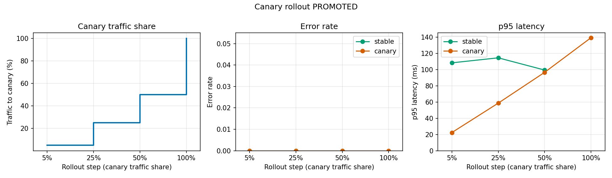
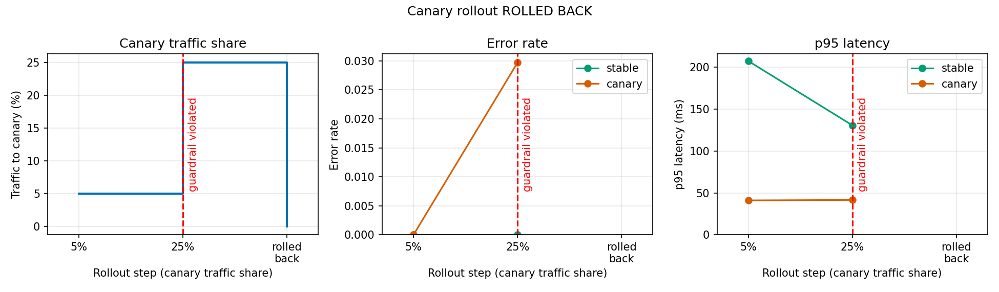

Deployment testing
Core Module
In the module on API testing we learned how to check that our API returns the right outputs and how it behaves under load. All of those tests run before the application reaches users. However, no matter how good our offline evaluation is, there is one thing it can never fully capture: real users sending real data. This is especially true for machine learning applications, where the data seen in production can differ from the test set in subtle ways, and where we tend to retrain and redeploy models far more often than a traditional software team ships new code.
Deployment testing (sometimes called testing in production or progressive delivery) covers the strategies we can use to expose a new version of our application to production traffic in a controlled way, measure how it behaves, and either promote it or roll it back. In this module we look at the three most common strategies:
- Shadow deployment: the new version receives a copy of the production traffic, but users never see its answers.
- Canary deployment: the new version receives a small, gradually increasing fraction of the real traffic.
- A/B testing: users are randomly split between two versions, and we use statistics to decide which one is better.
In practice these strategies are often chained together, with each stage exposing the new model to more users while we gain more confidence in it:
flowchart LR
A[Offline evaluation<br/>test set, unit + API tests] --> B[Shadow deployment<br/>0% of users affected]
B --> C[Canary deployment<br/>5% → 25% → 50%]
C --> D[A/B test<br/>statistical comparison]
D --> E[Full rollout<br/>100% of users]
B -. problems found .-> R[Roll back /<br/>back to development]
C -. guardrail violated .-> R
D -. no improvement .-> RBefore we start, it is worth getting an overview of the different strategies. Google Cloud's architecture guide on application deployment and testing strategies (now only available in the web archive) summarizes them in the following table, which also includes the pure deployment strategies (recreate, rolling update, blue/green) for comparison:
| Pattern | Zero downtime | Real production traffic testing | Releasing to users based on conditions | Rollback duration | Impact on hardware and cloud costs |
|---|---|---|---|---|---|
| Recreate: v1 is terminated, then v2 is rolled out | ✗ | ✗ | ✗ | Fast but disruptive because of downtime | No extra setup required |
| Rolling update: v2 gradually replaces v1 | ✓ | ✗ | ✗ | Slow | Can require extra setup for surge upgrades |
| Blue/green: v2 is released alongside v1, traffic is switched after testing | ✓ | ✗ | ✗ | Instant | Need to maintain blue and green environments simultaneously |
| Canary: v2 is released to a subset of users, followed by a full rollout | ✓ | ✓ | ✗ | Fast | No extra setup required |
| A/B: v2 is released, under specific conditions, to a subset of users | ✓ | ✓ | ✓ | Fast | No extra setup required |
| Shadow: v2 receives real-world traffic without impacting user requests | ✓ | ✓ | ✗ | Does not apply | Need to maintain parallel environments to capture and replay user requests |
Setting up the exercises
Throughout this module we are going to work with a small, self-contained setup that runs entirely on your laptop, so you can experiment without paying for cloud resources. For each strategy there are also optional exercises showing how to do the same thing on Cloud Run.
The setup consists of three pieces:
- A model service
model_versions_app.pythat serves a digit classifier trained on the scikit-learn digits dataset. The environment variableMODEL_VERSIONselects the model:v1is our current, slightly weaker production model andv2is the new candidate we want to roll out. Two further environment variables,FAILURE_RATEandEXTRA_LATENCY_MS, let us inject faults so we can see what a bad deployment looks like. - A traffic generator
traffic_generator.pythat simulates many users sending requests. Because it knows the true label of every image, it also simulates the delayed feedback that a real system would collect (for example, a user correcting a wrong prediction). - A router or proxy that sits in front of the model services and decides who gets which version. This is the part you will be implementing in the exercises.
flowchart LR
U[traffic_generator.py<br/>simulated users] -->|POST /predict<br/>X-User-ID header| R[router / proxy<br/>:8000]
R --> V1[model_versions_app.py<br/>MODEL_VERSION=v1<br/>:8001]
R --> V2[model_versions_app.py<br/>MODEL_VERSION=v2<br/>:8002]
R -.->|structured JSON logs| L[(logs)]❔ Exercises
-
Make sure you have the exercise dependencies installed (
fastapi,uvicorn,httpx,scikit-learn,scipy,matplotlibandtyper), for example with -
Copy the files from the
s7_deployment/exercise_filesfolder that start withmodel_versions_appandtraffic_generatorinto your own project. Look throughmodel_versions_app.pyand make sure you understand what it does. In particular, notice that the response contains amodel_versionfield and arevisionfield. The latter is read from theK_REVISIONenvironment variable, which Cloud Run sets automatically for every container. Why is it useful to include this information in the response of an API that is being deployment tested?Solution
When multiple versions of an application are serving traffic at the same time, we need to know which version produced each response. Otherwise we have no way of attributing errors, latencies or bad predictions to a specific version. Including it in the response (and in the logs) is the simplest way to do this.
-
Start the two model versions in two different terminals:
MODEL_VERSION=v1 uv run uvicorn model_versions_app:app --port 8001 MODEL_VERSION=v2 uv run uvicorn model_versions_app:app --port 8002and check that both of them work by sending traffic directly to each of them:
uv run traffic_generator.py --url http://localhost:8001 --n-requests 500 uv run traffic_generator.py --url http://localhost:8002 --n-requests 500What is the accuracy and latency of each version?
Solution
You should see that
v2is clearly more accurate thanv1: on the test split,v1(a heavily regularized logistic regression trained on only 150 images) has an accuracy of about 91% andv2(a support vector machine trained on all the training data) about 99%. Both versions answer within a few tens of milliseconds when running locally.
Shadow deployment
We start with the safest strategy. In a shadow deployment (also called traffic mirroring or dark launching) the new version runs alongside the current production version. Every incoming request is sent to the production version as usual, and a copy is sent to the shadow version. Users only ever receive the response from production, while the response from the shadow version is logged and compared offline.

For machine learning models shadow deployments are particularly useful because they let us:
- Run the new model on real production inputs, including all the weird edge cases that never made it into our test set.
- Directly compare the predictions of the old and new model on identical inputs, which is much more informative than comparing two aggregate metrics.
- Measure latency and resource usage of the new model under real production load.
- Do all of this with zero user impact, because no user ever sees a shadow prediction.
The main drawbacks are cost (we are now running two full versions of our model) and complexity. Two things in particular need careful thought:
- Side effects. The shadow version must not change anything that users can observe. If our application writes to a database, sends emails or calls a payment service, the shadow version needs to use stubs instead. Otherwise the customer might, as the Google guide puts it, pay twice for their order.
- Latency. The shadow call must never slow down the user's request. If we naively wait for both the production and shadow responses before answering, users pay the latency of the slowest of the two models.
The second point is best illustrated by comparing the two ways of implementing a shadow proxy:
sequenceDiagram
participant User
participant Proxy
participant Primary as Primary (v1)
participant Shadow as Shadow (v2)
User->>Proxy: POST /predict
par
Proxy->>Primary: request
Primary-->>Proxy: prediction
and
Proxy->>Shadow: copy of request
Shadow-->>Proxy: prediction (slow!)
end
Proxy-->>User: primary prediction
Note over User,Proxy: user waits for max(primary, shadow)sequenceDiagram
participant User
participant Proxy
participant Primary as Primary (v1)
participant Shadow as Shadow (v2)
User->>Proxy: POST /predict
Proxy->>Primary: request
Proxy-)Shadow: copy of request (background task)
Primary-->>Proxy: prediction
Proxy-->>User: primary prediction
Note over User,Proxy: user only waits for primary
Shadow-->>Proxy: prediction
Proxy->>Proxy: log comparisonIn production you usually do not write the shadow proxy yourself. Most load balancers and service meshes can mirror traffic for you, for example Istio, NGINX or any implementation of the Kubernetes Gateway API, which can also mirror just a percentage of the requests. Some model serving frameworks, such as Seldon Core, also have built-in support for shadow models. Cloud Run, however, does not support traffic mirroring, because its traffic splitting always sends each request to exactly one revision. We are therefore going to implement a small shadow proxy ourselves, which is also a great way to understand what the tools do under the hood.
❔ Exercises
-
Implement a shadow proxy in a file called
shadow_proxy.py. It should be a FastAPI application with a/predictendpoint that- forwards the request to a primary service and returns its response to the user,
- sends a copy of the request to a shadow service,
- logs both predictions, both latencies and whether they agree, as one JSON line per request.
The URLs of the primary and shadow services should be configurable through the environment variables
PRIMARY_URLandSHADOW_URL. Start by implementing the naive version that usesasyncio.gatherto call both services at the same time and waits for both answers.Logging JSON instead of plain text
Writing one JSON object per line to standard output (structured logging) is a good habit. Cloud Run (and most other log collectors) automatically parses such lines and stores them as a
jsonPayload, which means you can later filter and query on individual fields instead of writing regular expressions against free text: -
Make the shadow model artificially slow by restarting it with an extra 300 ms of latency:
Start your proxy on port 8000 and send traffic through it with the traffic generator. What happens to the latency the user sees?
-
Change your proxy so that the shadow request is sent as a fire-and-forget background task, such that the user only waits for the primary model. Measure the user latency again.
Fire-and-forget in asyncio
asyncio.create_task(...)schedules a coroutine to run in the background. Be aware that the event loop only keeps a weak reference to tasks, so a task that you do not keep a reference to may be garbage collected before it finishes. The recommended pattern is to store the tasks in a set and remove them when they are done:Solution
The solution below implements both modes, selected with the
SHADOW_MODEenvironment variable. Start it withSHADOW_MODE=sync uv run uvicorn shadow_proxy:app --port 8000 # naive version SHADOW_MODE=async uv run uvicorn shadow_proxy:app --port 8000 # fire-and-forgetIn our runs (1000 requests, 20 concurrent users) with a shadow model that was 300 ms slower, the naive version had a user-facing p95 latency of about 450 ms, while the fire-and-forget version stayed at about 130 ms. The users of the naive proxy pay for every millisecond the shadow model spends, which defeats the purpose of a shadow deployment.
-
Notice that the solution does not log the raw input image, only a hash of it. Why could it be a bad idea to log every input in a shadow deployment?
Solution
Production inputs can contain personal or sensitive data, and storing them in logs may violate privacy regulations such as GDPR or your company's data policies. In addition, logging every input can produce a very large volume of logs, which costs money to store and query. If you need the inputs for later analysis (for example, to label the cases where the models disagree), store them deliberately in a dedicated, access controlled location with a retention policy, or sample only a fraction of them.
-
Run the traffic generator for a couple of thousand requests through your shadow proxy (using a shadow model without extra latency this time). Then write a script
shadow_analysis.pythat reads the comparison logs and reports- the agreement rate between the primary and shadow model,
- the error rate of the shadow model,
- the p50 and p95 latency of both models,
- a disagreement matrix that counts how often the primary predicted class
iwhile the shadow predicted classj.
Solution
Running
uv run shadow_analysis.py shadow_log.jsonl --plot shadow_analysis.pngshould produce a figure like the one below. The two models agree on about 92% of the requests. The off-diagonal cells show exactly which digits the models disagree on, which is a great starting point for looking at concrete examples. -
Based on the analysis, can you conclude that the shadow model is better than the primary model? What would you need in order to answer that question?
Solution
No. A shadow deployment tells us how often and where the two models disagree, and whether the new model is fast and stable enough, but not which of them is right. To know which model is more accurate we need ground truth labels. In some applications these arrive later (for example, a user correcting a prediction or a transaction turning out to be fraudulent), and they can be joined with the shadow logs. Otherwise, a common approach is to manually label a sample of the disagreements. If the change is supposed to affect user behavior, we need to actually show the new model to users, which is where canary deployments and A/B tests come in.
-
(Optional) Deploy the two model versions and your shadow proxy to Cloud Run as three separate services, set the
PRIMARY_URLandSHADOW_URLenvironment variables of the proxy to the URLs of the two model services, and send traffic to the proxy. Afterwards, export the comparison logs from Cloud Logging and analyze them with your script:

Canary deployment
A shadow deployment tells us that the new model works, but users never interact with it. The next step is to let a small fraction of real users receive the new version. This is called a canary deployment, named after the canaries that miners took into coal mines: if the canary got sick, the miners knew there was a problem before it affected them. Similarly, if something is wrong with the new version, only the small fraction of users routed to the canary is affected.

A canary rollout typically looks like this:
- Deploy the new version next to the current one, without sending traffic to it.
- Route a small percentage of the traffic (for example 5%) to the new version.
- Compare a few key metrics of the canary against the current version for a while.
- If the metrics look good, increase the traffic (for example 5% → 25% → 50% → 100%). If they do not, immediately roll back by sending all traffic to the current version.
The chapter on canarying releases in Google's Site Reliability Engineering Workbook contains a lot of good advice on how to do step 3 well. A few of the main points are:
- Compare against a concurrent control, not against how the system behaved yesterday. Metrics naturally change over time (weekday vs. weekend, time of day), so the canary should be compared with the current version serving traffic at the same time.
- Use a small number of metrics that reflect what users experience, such as error rate and latency. The chapter recommends no more than a dozen, and warns that metrics like CPU usage are often too noisy to be useful.
- Combine relative and absolute checks. If both versions get worse at the same time (because of a shared dependency), a pure comparison would not catch it, so also check against your service level objectives.
- Run only one canary at a time, otherwise you cannot tell which change caused a problem.
These rules are called guardrails: conditions that must hold for the rollout to continue. For ML models, typical guardrails are the error rate, the p95 or p99 latency (averages hide the slow requests that users complain about), and properties of the predictions themselves, such as the distribution of predicted classes or the average model confidence. A sudden shift in these can reveal problems like a preprocessing bug long before any ground truth labels arrive.
❔ Exercises
In these exercises we are going to automate a canary rollout using a router that can split traffic between two backends and report metrics for each of them.
-
Look at the file
ab_router.pyin the exercise folder. It is a small FastAPI application that forwards each request to one of two backends (BACKEND_AandBACKEND_B) according to some weights. Besides/predict, it has a couple of admin endpoints:GETandPUT /admin/weightsto read and change the traffic split,GET /admin/metricsto get the number of requests, the error rate and the p50/p95 latency of each backend,POST /admin/metrics/resetto reset the metrics.
Start the two model services (without fault injection) and the router:
Set the traffic split to 90/10 with
curl -X PUT localhost:8000/admin/weights -H "Content-Type: application/json" -d '{"a": 90, "b": 10}'send some traffic through the router and check the metrics endpoint. Does roughly 10% of the traffic end up at the canary?
Router implementation
We are going to come back to how the router assigns users to backends in the A/B testing section.
ab_router.py 1 2 3 4 5 6 7 8 9 10 11 12 13 14 15 16 17 18 19 20 21 22 23 24 25 26 27 28 29 30 31 32 33 34 35 36 37 38 39 40 41 42 43 44 45 46 47 48 49 50 51 52 53 54 55 56 57 58 59 60 61 62 63 64 65 66 67 68 69 70 71 72 73 74 75 76 77 78 79 80 81 82 83 84 85 86 87 88 89 90 91 92 93 94 95 96 97 98 99 100 101 102 103 104 105 106 107 108 109 110 111 112 113 114 115 116 117 118 119 120 121 122 123 124 125 126 127 128 129 130 131 132
"""A/B test router: sticky user bucketing in front of two model backends. It also exposes admin endpoints (weights + metrics) so a canary controller can shift traffic gradually. State is in memory, so run a SINGLE replica. In production you would use Cloud Monitoring / Prometheus. Run with: uvicorn ab_router:app --port 8000 """ import hashlib import json import os import time import uuid from collections import defaultdict, deque from contextlib import asynccontextmanager import httpx import numpy as np from fastapi import FastAPI, Header, HTTPException from pydantic import BaseModel BACKENDS = {"a": os.getenv("BACKEND_A", "http://localhost:8001"), "b": os.getenv("BACKEND_B", "http://localhost:8002")} EXPERIMENT = os.getenv("EXPERIMENT", "mnist-ab") weights = {"a": 50.0, "b": 50.0} # percentages def assign_variant(user_id: str, experiment: str, weights: dict[str, float]) -> str: """Deterministically map a user to a variant (sticky assignment). We hash "experiment:user_id" with SHA-256 and turn it into a bucket in [0, 10000). Variants own consecutive slices of the buckets, proportional to their weights. Do NOT use Python's builtin `hash()` here: for strings it is salted per process (PYTHONHASHSEED), so every restart or replica would reassign users to other variants. Including the experiment name makes assignments independent between experiments. """ digest = hashlib.sha256(f"{experiment}:{user_id}".encode()).hexdigest() bucket = int(digest, 16) % 10000 total = sum(weights.values()) cumulative = 0.0 for variant, weight in weights.items(): cumulative += weight / total * 10000 if bucket < cumulative: return variant return list(weights)[-1] # guard against floating point round-off # Per-variant statistics since the last reset (bounded memory for the latencies) stats = defaultdict(lambda: {"requests": 0, "errors": 0, "latencies": deque(maxlen=1000)}) @asynccontextmanager async def lifespan(app: FastAPI): """Create one shared HTTP client for all requests.""" app.state.client = httpx.AsyncClient(timeout=10) yield await app.state.client.aclose() app = FastAPI(lifespan=lifespan) @app.post("/predict") async def predict(request: dict, x_user_id: str | None = Header(default=None)): """Route the request to a backend based on the user id.""" # Without a user id we fall back to a random one, so assignment is NOT sticky for such requests. user_id = x_user_id or str(uuid.uuid4()) variant = assign_variant(user_id, EXPERIMENT, weights) start = time.perf_counter() try: response = await app.state.client.post(f"{BACKENDS[variant]}/predict", json=request) status = response.status_code except httpx.HTTPError: status = 502 latency_ms = (time.perf_counter() - start) * 1000 s = stats[variant] s["requests"] += 1 s["errors"] += status >= 500 s["latencies"].append(latency_ms) # On Cloud Run, a JSON line on stdout becomes a structured log entry (`jsonPayload`) that can be queried. log = {"severity": "INFO", "message": "ab_assignment", "experiment": EXPERIMENT, "user_id": user_id} print(json.dumps({**log, "variant": variant, "status": status, "latency_ms": round(latency_ms, 1)}), flush=True) if status >= 300: raise HTTPException(status_code=status, detail=f"Backend {variant} returned {status}") return {**response.json(), "variant": variant} class Weights(BaseModel): """Traffic split in percent.""" a: float b: float @app.get("/admin/weights") def get_weights(): """Current traffic split.""" return weights @app.put("/admin/weights") def set_weights(new: Weights): """Change the traffic split (must sum to 100).""" if abs(new.a + new.b - 100) > 1e-6 or min(new.a, new.b) < 0: raise HTTPException(status_code=422, detail="Weights must be non-negative and sum to 100") weights.update(a=new.a, b=new.b) return weights @app.get("/admin/metrics") def get_metrics(): """Per-variant request count, error rate and latency percentiles since the last reset.""" out = {} for variant in BACKENDS: s = stats[variant] n = s["requests"] p50, p95 = np.percentile(s["latencies"], [50, 95]) if n else (0.0, 0.0) out[variant] = { "requests": n, "errors": s["errors"], "error_rate": s["errors"] / n if n else 0.0, "p50_latency_ms": float(p50), "p95_latency_ms": float(p95), } return out @app.post("/admin/metrics/reset") def reset_metrics(): """Forget all collected statistics.""" stats.clear() return {"status": "reset"} -
Write a script
canary_rollout.pythat automates the rollout. The script should go through the steps[5, 25, 50, 100]and, for each step:- Set the traffic split on the router.
- Reset the metrics and send a batch of probe requests through the router.
- Read the metrics and check two guardrails: the canary error rate must not be more than 1 percentage point higher than the stable version, and the canary p95 latency must not be more than 1.5 times the stable p95 latency.
- If a guardrail is violated, immediately send all traffic back to the stable version, print why, and exit with a non-zero exit code (so that a CI pipeline running the script would fail).
If all steps pass, the canary has been promoted to 100% of the traffic.
Solution
The solution is structured around a small
TrafficBackendinterface with two implementations: one that talks to our local router and one that usesgcloudto update the traffic split on Cloud Run. This way the rollout logic is the same no matter where the model is deployed.canary_rollout.py 1 2 3 4 5 6 7 8 9 10 11 12 13 14 15 16 17 18 19 20 21 22 23 24 25 26 27 28 29 30 31 32 33 34 35 36 37 38 39 40 41 42 43 44 45 46 47 48 49 50 51 52 53 54 55 56 57 58 59 60 61 62 63 64 65 66 67 68 69 70 71 72 73 74 75 76 77 78 79 80 81 82 83 84 85 86 87 88 89 90 91 92 93 94 95 96 97 98 99 100 101 102 103 104 105 106 107 108 109 110 111 112 113 114 115 116 117 118 119 120 121 122 123 124 125 126 127 128 129 130 131 132 133 134 135 136 137 138 139 140 141 142 143 144 145 146 147 148 149 150 151 152 153 154 155 156 157 158 159 160 161 162 163 164 165 166 167 168 169 170 171 172 173 174 175 176 177 178 179 180 181 182 183 184 185 186 187 188 189 190 191 192 193 194 195 196 197 198 199 200 201 202 203 204 205 206 207 208 209 210 211 212 213 214 215 216 217 218 219 220 221 222 223 224 225 226
"""Automated canary rollout: shift traffic to the canary step by step and roll back if guardrails are violated. Two backends are available: local the traffic split is controlled through the admin API of ab_router.py (variant "b" = canary) cloudrun the traffic split is controlled with `gcloud run services update-traffic` (canary revision tagged "canary") Examples: python canary_rollout.py --plot figures/canary_rollout_success.png python canary_rollout.py --backend cloudrun --service my-service --region europe-west1 """ import asyncio import random import subprocess import time from typing import Annotated, Protocol import httpx import matplotlib as mpl import numpy as np import typer from sklearn.datasets import load_digits from sklearn.model_selection import train_test_split mpl.use("Agg") import matplotlib.pyplot as plt # noqa: E402 app = typer.Typer() _, X_TEST, _, _ = train_test_split(*load_digits(return_X_y=True), test_size=0.5, random_state=42) async def send_requests(url: str, n: int, headers: dict | None = None) -> list[tuple[int, float]]: """Send n random digit images to url/predict. Returns (status code, latency in ms) per request.""" semaphore = asyncio.Semaphore(20) async def one(client, i): async with semaphore: payload = {"pixels": random.choice(X_TEST).tolist()} start = time.perf_counter() try: status = ( await client.post( f"{url}/predict", json=payload, headers={"X-User-ID": f"probe-{i}-{random.random()}"} ) ).status_code except httpx.HTTPError: status = 599 return status, (time.perf_counter() - start) * 1000 async with httpx.AsyncClient(timeout=10, headers=headers) as client: return await asyncio.gather(*[one(client, i) for i in range(n)]) def summarize(results: list[tuple[int, float]]) -> dict: """Client-side request count, error rate and p95 latency.""" errors = sum(status >= 500 for status, _ in results) p95 = float(np.percentile([ms for _, ms in results], 95)) if results else 0.0 return {"requests": len(results), "error_rate": errors / max(len(results), 1), "p95_latency_ms": p95} class TrafficBackend(Protocol): """What the controller needs from the platform.""" def set_canary_percent(self, percent: int) -> None: """Send `percent` of the traffic to the canary.""" def measure(self, n_requests: int, percent: int) -> dict: """Generate probe traffic and return {"stable": {...}, "canary": {...}} metrics.""" class LocalRouter: """Use ab_router.py: variant a is stable, variant b is the canary.""" def __init__(self, router_url: str): self.url = router_url def set_canary_percent(self, percent: int) -> None: """Update the router weights.""" httpx.put(f"{self.url}/admin/weights", json={"a": 100 - percent, "b": percent}).raise_for_status() def measure(self, n_requests: int, percent: int) -> dict: """Reset router metrics, send traffic through the router and read the router's metrics.""" httpx.post(f"{self.url}/admin/metrics/reset") asyncio.run(send_requests(self.url, n_requests)) metrics = httpx.get(f"{self.url}/admin/metrics").json() return {"stable": metrics["a"], "canary": metrics["b"]} class CloudRun: """Use Cloud Run revision tags. Metrics are measured by this script by calling the two URLs directly.""" def __init__(self, service: str, region: str): self.service, self.region = service, region url = self.gcloud("describe", self.service, "--format=value(status.url)") self.stable_url = url self.canary_url = url.replace("https://", "https://canary---") # URL of the revision tagged "canary" def gcloud(self, *args: str) -> str: """Run `gcloud run services ...` and return stdout.""" cmd = ["gcloud", "run", "services", args[0], *args[1:], "--region", self.region] return subprocess.run(cmd, check=True, capture_output=True, text=True).stdout.strip() def set_canary_percent(self, percent: int) -> None: """Assign `percent` of the traffic to the revision tagged "canary" (the rest stays on the other revision).""" self.gcloud("update-traffic", self.service, f"--to-tags=canary={percent}") def measure(self, n_requests: int, percent: int) -> dict: """Send the same number of probe requests to both URLs, so both have enough data for the comparison.""" # Note: assumes the service allows unauthenticated access; otherwise add an identity token header. stable = asyncio.run(send_requests(self.stable_url, n_requests)) canary = asyncio.run(send_requests(self.canary_url, n_requests)) return {"stable": summarize(stable), "canary": summarize(canary)} def check_guardrails( canary: dict, baseline: dict, max_error_increase: float, max_latency_ratio: float, latency_slack_ms: float ) -> str | None: """Return a reason string if a guardrail is violated, otherwise None.""" if canary["error_rate"] > baseline["error_rate"] + max_error_increase: return f"error rate {canary['error_rate']:.3f} > stable {baseline['error_rate']:.3f} + {max_error_increase}" # The slack avoids rollbacks caused by measurement noise when latencies are only a few milliseconds. if canary["p95_latency_ms"] > baseline["p95_latency_ms"] * max_latency_ratio + latency_slack_ms: return ( f"p95 {canary['p95_latency_ms']:.0f} ms > {max_latency_ratio} x stable {baseline['p95_latency_ms']:.0f} ms" ) return None def plot_history(history: list[dict], rolled_back: bool, path: str): """Canary traffic share, error rate and p95 latency per step. The rollback is marked in red.""" steps = list(range(1, len(history) + 1)) percents = [h["percent"] for h in history] + ([0] if rolled_back else []) fig, axes = plt.subplots(1, 3, figsize=(13, 3.8)) axes[0].step(range(1, len(percents) + 1), percents, where="post", color="#0072B2", lw=2) axes[0].set_ylabel("Traffic to canary (%)") axes[0].set_title("Canary traffic share") for ax, key, title, label in [ (axes[1], "error_rate", "Error rate", "Error rate"), (axes[2], "p95_latency_ms", "p95 latency", "p95 latency (ms)"), ]: ax.plot( steps, [h["stable"][key] if h["stable"]["requests"] else np.nan for h in history], "o-", color="#009E73", label="stable", ) ax.plot( steps, [h["canary"][key] if h["canary"]["requests"] else np.nan for h in history], "o-", color="#D55E00", label="canary", ) ax.set_ylabel(label) ax.set_ylim(bottom=0) ax.set_title(title) ax.legend() labels = [f"{p}%" for p in percents] if rolled_back: labels[-1] = "rolled\nback" for ax in axes: ax.set_xlabel("Rollout step (canary traffic share)") ax.set_xticks(range(1, len(percents) + 1), labels) ax.set_xlim(0.7, len(percents) + 0.3) ax.grid(alpha=0.3) if rolled_back: ax.axvline(len(history), color="red", ls="--") ax.text( len(history) + 0.05, 0.5, "guardrail violated", color="red", rotation=90, va="center", transform=ax.get_xaxis_transform(), ) fig.suptitle("Canary rollout " + ("ROLLED BACK" if rolled_back else "PROMOTED")) fig.tight_layout() fig.savefig(path, dpi=150) @app.command() def main( backend: str = "local", router_url: str = "http://localhost:8000", service: str = "model-service", region: str = "europe-west1", steps: Annotated[list[int], typer.Option()] = (5, 25, 50, 100), requests_per_step: int = 400, max_error_rate_increase: float = 0.01, max_latency_ratio: float = 1.5, latency_slack_ms: float = 50, plot: str = typer.Option(None, help="Save a figure of the rollout to this path"), ): """Roll out the canary step by step. Exit code 1 means it was rolled back.""" platform = LocalRouter(router_url) if backend == "local" else CloudRun(service, region) history, baseline, failure = [], None, None for percent in steps: platform.set_canary_percent(percent) m = platform.measure(requests_per_step, percent) history.append({"percent": percent, **m}) # At 100% the stable version gets (almost) no traffic, so keep comparing to the last good baseline. if m["stable"]["requests"] >= 30: baseline = m["stable"] for name in ("stable", "canary"): r = m[name] line = f"{percent:>3}% | {name:<6} n={r['requests']:<4} errors={r['error_rate']:.3f}" print(f"{line} p95={r['p95_latency_ms']:.0f} ms") failure = check_guardrails( m["canary"], baseline or m["stable"], max_error_rate_increase, max_latency_ratio, latency_slack_ms ) if failure: break if failure: platform.set_canary_percent(0) print(f"ROLLBACK at {percent}%: {failure}") else: print("PROMOTED: canary passed all guardrails") if plot: plot_history(history, failure is not None, plot) raise typer.Exit(code=1 if failure else 0) if __name__ == "__main__": app() -
Run your rollout script against the healthy
v2model. Then restart thev2service with a 5% failure rate, simulating a model that crashes on some inputs:and run the rollout script again. At which step is the rollout stopped, and how many users were affected by the bad version? You can try the same with
EXTRA_LATENCY_MSinstead ofFAILURE_RATE.Solution
Running the solution with
--plot canary_rollout.pngproduces figures like the ones below. With the healthy model, the canary passes all guardrails and is promoted to 100%. With the faulty model, the error rate of the canary jumps above the guardrail and the rollout is rolled back at one of the first steps (5% or 25%, depending on how many of the few canary requests happen to fail), meaning that only a small fraction of the requests ever reached the bad version.

Top: a healthy canary is promoted to 100%. Bottom: a canary with a 5% failure rate is rolled back. Notice in the solution that the latency guardrail also has a small absolute slack (
--latency-slack-ms). When latencies are only a few tens of milliseconds, the p95 of a few hundred requests is so noisy that a pure ratio would sometimes roll back a perfectly healthy canary. Also notice that at the 5% step, the canary only receives around 20 of the 400 probe requests, so a failure rate of a few percent may not be detected until a later step. This is the trade-off of canary deployments: the fewer users we expose, the less we can conclude from what we observe. -
Our guardrails only look at error rate and latency. Write down at least two ML-specific guardrails you could add to the rollout script, and how you would compute them without having access to ground truth labels.
Solution
A few possibilities:
- Prediction distribution shift: compare the distribution of predicted classes from the canary with the stable version, for example with a chi-squared test or the total variation distance. A preprocessing bug (for example, images that are no longer normalized) typically makes the model predict the same class for almost everything.
- Confidence: compare the average (or the distribution of) the maximum softmax probability. A large drop means the model is uncertain on the production data.
- Input validation failures: the fraction of requests that fail schema or range validation.
- Delayed feedback: if some labels arrive later (users correcting predictions), the accuracy on those can be used as a guardrail in later, longer running steps.
Many of these are exactly the drift metrics we will be looking at in the module on data drifting.
-
(Optional) Do a canary deployment on Cloud Run. Cloud Run keeps every deployment as an immutable revision and lets you split traffic between revisions. Build a docker image from
model_versions_app.dockerfile, push it to your artifact registry and-
deploy the stable version, giving the revision a readable name with
--revision-suffix: -
deploy the new version without sending any traffic to it, but with a tag. A tag gives the revision its own URL of the form
https://canary---mnist-classifier-<hash>.<region>.run.appthat you can use to test it before any user sees it: -
send 10% of the traffic to the canary, check the logs, and increase or roll back as needed:
# start the canary gcloud run services update-traffic mnist-classifier --region <region> \ --to-revisions mnist-classifier-v2=10,mnist-classifier-v1=90 # promote it gcloud run services update-traffic mnist-classifier --region <region> --to-revisions mnist-classifier-v2=100 # ... or roll back gcloud run services update-traffic mnist-classifier --region <region> --to-revisions mnist-classifier-v1=100 -
try running the
canary_rollout.pyscript with--backend cloudrunagainst your service.
Managed canary rollouts
Writing your own rollout script is a great way to understand how canary deployments work, but in production you would probably use a managed tool. On Google Cloud, Cloud Deploy can do canary rollouts to Cloud Run, including running verification jobs between phases and automatically advancing the rollout when they pass. On Kubernetes, tools like Argo Rollouts and Flagger do the same, and KServe supports canary rollouts of models directly.
-


A/B testing
A canary deployment answers the question "is the new version safe?". An A/B test answers a different question: "is the new version better?". In an A/B test (also called an online controlled experiment) users are randomly split into two groups. Group A gets the current version (the control) and group B gets the new version (the treatment). Because the assignment is random, the only systematic difference between the two groups is the version they are using, so any difference in our metrics that is larger than what we would expect by chance can be attributed to the new version.


For machine learning, A/B tests are the gold standard for answering questions that offline evaluation cannot, for example whether a recommendation model with a better offline score actually makes users buy more, or whether a more accurate but slower model leads to more users giving up. There are a few important things to get right.
Randomize on the right unit and keep assignments sticky. We usually want to randomize users, not requests, such that the same user always sees the same version. Otherwise a user might get different answers to the same question, and the measurements of the two groups are no longer independent. Note that Cloud Run's traffic splitting assigns requests randomly. It does support session affinity, but this is cookie based and best effort, so for a proper A/B test we need to do the assignment ourselves. The standard trick is to hash the user id together with the name of the experiment:
bucket = int(hashlib.sha256(f"{experiment}:{user_id}".encode()).hexdigest(), 16) % 10_000
variant = "b" if bucket < 5_000 else "a"
This is deterministic (the same user always ends up in the same bucket), requires no database, works across many replicas of the router, and including the experiment name means that different experiments get independent assignments.
Decide on the metric and sample size before starting. The statistical test we use depends on the metric. The table below (adapted from Wikipedia) gives an overview of the most common choices:
| Assumed distribution | Example case | Standard test | Alternative test |
|---|---|---|---|
| Gaussian | Average revenue per user | Welch's t-test | Student's t-test |
| Binomial | Click-through rate, accuracy | Fisher's exact test | Barnard's test |
| Poisson | Transactions per paying user | E-test | C-test |
| Multinomial | Number of each product purchased | Chi-squared test | G-test |
| Unknown | Latency, time to purchase | Mann-Whitney U test | Gibbs sampling |
For binomial metrics like accuracy with thousands of samples, the two-proportion z-test is a good approximation to Fisher's exact test and is easy to compute by hand. The number of samples you need depends on three choices that must be made before the experiment starts:
- The significance level α, the probability of a false positive (typically 0.05).
- The power 1 - β, the probability of detecting a real effect (typically 0.8).
- The minimum detectable effect (MDE), the smallest improvement you care about.
The smaller the improvement you want to detect, the more samples you need, and the relationship is quadratic: halving the MDE requires roughly four times as many samples.

Do not stop the experiment as soon as the result looks significant. It is tempting to check the p-value every day and stop the experiment once it drops below 0.05. This is called peeking, and it dramatically increases the false positive rate, as explained in Evan Miller's classic post How Not To Run an A/B Test. Either fix the sample size in advance, or use methods designed for continuous monitoring, such as sequential tests.
Check that the split is what you expected. If you configured a 50/50 split but observe 5000 users in group A and 5300 in group B, something is wrong, for example a bug in the routing or one of the versions crashing more often so that its requests are never logged. This is called a sample ratio mismatch (SRM). A study from Microsoft found that about 6% of their experiments had an SRM, and the results of such experiments cannot be trusted. It is checked with a simple chi-squared test, and because it should essentially never fail, a very low threshold such as p < 0.001 is commonly used.
❔ Exercises
-
Implement the function
assign_variant(user_id: str, experiment: str, weights: dict[str, float]) -> strthat deterministically assigns a user to a variant using the hashing trick shown above, but for an arbitrary number of variants with arbitrary weights (for example{"a": 90, "b": 10}). Write a couple of tests for it:- the same user always gets the same variant,
- over many users, the observed split is close to the configured weights,
- a weight of 100 for variant
aalways returnsa, - two different experiments assign users independently.
Solution
The implementation is part of the router:
ab_router.py 1 2 3 4 5 6 7 8 9 10 11 12 13 14 15 16 17 18 19 20 21 22 23 24 25 26 27 28 29 30 31 32 33 34 35 36 37 38 39 40 41 42 43 44 45 46 47 48 49 50 51 52 53 54 55 56 57 58 59 60 61 62 63 64 65 66 67 68 69 70 71 72 73 74 75 76 77 78 79 80 81 82 83 84 85 86 87 88 89 90 91 92 93 94 95 96 97 98 99 100 101 102 103 104 105 106 107 108 109 110 111 112 113 114 115 116 117 118 119 120 121 122 123 124 125 126 127 128 129 130 131 132
"""A/B test router: sticky user bucketing in front of two model backends. It also exposes admin endpoints (weights + metrics) so a canary controller can shift traffic gradually. State is in memory, so run a SINGLE replica. In production you would use Cloud Monitoring / Prometheus. Run with: uvicorn ab_router:app --port 8000 """ import hashlib import json import os import time import uuid from collections import defaultdict, deque from contextlib import asynccontextmanager import httpx import numpy as np from fastapi import FastAPI, Header, HTTPException from pydantic import BaseModel BACKENDS = {"a": os.getenv("BACKEND_A", "http://localhost:8001"), "b": os.getenv("BACKEND_B", "http://localhost:8002")} EXPERIMENT = os.getenv("EXPERIMENT", "mnist-ab") weights = {"a": 50.0, "b": 50.0} # percentages def assign_variant(user_id: str, experiment: str, weights: dict[str, float]) -> str: """Deterministically map a user to a variant (sticky assignment). We hash "experiment:user_id" with SHA-256 and turn it into a bucket in [0, 10000). Variants own consecutive slices of the buckets, proportional to their weights. Do NOT use Python's builtin `hash()` here: for strings it is salted per process (PYTHONHASHSEED), so every restart or replica would reassign users to other variants. Including the experiment name makes assignments independent between experiments. """ digest = hashlib.sha256(f"{experiment}:{user_id}".encode()).hexdigest() bucket = int(digest, 16) % 10000 total = sum(weights.values()) cumulative = 0.0 for variant, weight in weights.items(): cumulative += weight / total * 10000 if bucket < cumulative: return variant return list(weights)[-1] # guard against floating point round-off # Per-variant statistics since the last reset (bounded memory for the latencies) stats = defaultdict(lambda: {"requests": 0, "errors": 0, "latencies": deque(maxlen=1000)}) @asynccontextmanager async def lifespan(app: FastAPI): """Create one shared HTTP client for all requests.""" app.state.client = httpx.AsyncClient(timeout=10) yield await app.state.client.aclose() app = FastAPI(lifespan=lifespan) @app.post("/predict") async def predict(request: dict, x_user_id: str | None = Header(default=None)): """Route the request to a backend based on the user id.""" # Without a user id we fall back to a random one, so assignment is NOT sticky for such requests. user_id = x_user_id or str(uuid.uuid4()) variant = assign_variant(user_id, EXPERIMENT, weights) start = time.perf_counter() try: response = await app.state.client.post(f"{BACKENDS[variant]}/predict", json=request) status = response.status_code except httpx.HTTPError: status = 502 latency_ms = (time.perf_counter() - start) * 1000 s = stats[variant] s["requests"] += 1 s["errors"] += status >= 500 s["latencies"].append(latency_ms) # On Cloud Run, a JSON line on stdout becomes a structured log entry (`jsonPayload`) that can be queried. log = {"severity": "INFO", "message": "ab_assignment", "experiment": EXPERIMENT, "user_id": user_id} print(json.dumps({**log, "variant": variant, "status": status, "latency_ms": round(latency_ms, 1)}), flush=True) if status >= 300: raise HTTPException(status_code=status, detail=f"Backend {variant} returned {status}") return {**response.json(), "variant": variant} class Weights(BaseModel): """Traffic split in percent.""" a: float b: float @app.get("/admin/weights") def get_weights(): """Current traffic split.""" return weights @app.put("/admin/weights") def set_weights(new: Weights): """Change the traffic split (must sum to 100).""" if abs(new.a + new.b - 100) > 1e-6 or min(new.a, new.b) < 0: raise HTTPException(status_code=422, detail="Weights must be non-negative and sum to 100") weights.update(a=new.a, b=new.b) return weights @app.get("/admin/metrics") def get_metrics(): """Per-variant request count, error rate and latency percentiles since the last reset.""" out = {} for variant in BACKENDS: s = stats[variant] n = s["requests"] p50, p95 = np.percentile(s["latencies"], [50, 95]) if n else (0.0, 0.0) out[variant] = { "requests": n, "errors": s["errors"], "error_rate": s["errors"] / n if n else 0.0, "p50_latency_ms": float(p50), "p95_latency_ms": float(p95), } return out @app.post("/admin/metrics/reset") def reset_metrics(): """Forget all collected statistics.""" stats.clear() return {"status": "reset"}and the tests could look like this:
-
A fellow student suggests using Python's built-in
hash(user_id) % 100instead ofhashlib, since it is simpler. Try runninga couple of times. Why would this be a bad choice for assigning users in an A/B test?
Solution
Since Python 3.3, the hash of strings is randomized with a salt that is chosen when the Python process starts (see
PYTHONHASHSEED), to protect against denial-of-service attacks. This means that every time the router restarts, and on every replica of the router, the same user would get a different variant. Assignments would no longer be sticky. Cryptographic hashes like SHA-256 always give the same result. -
Start the two model services and the router (with a 50/50 split) and send traffic through it with the traffic generator:
uv run traffic_generator.py --url http://localhost:8000 --n-requests 4000 --output traffic_log.jsonlCheck in the log file that every user was always routed to the same variant.
-
Implement the following three functions for analyzing the results of an A/B test:
two_proportion_ztest(successes_a, n_a, successes_b, n_b)that returns the z-statistic and the two-sided p-value of the two-proportion z-test,required_sample_size(p_baseline, mde, alpha=0.05, power=0.8)that returns the number of samples needed per group,sample_ratio_mismatch(n_a, n_b, expected=(0.5, 0.5))that returns the p-value of a chi-squared test for SRM.
Formulas
With
x_asuccesses out ofn_asamples in group A (and similarly for group B), the z-statistic uses the pooled success rate of both groups:p_a, p_b = x_a / n_a, x_b / n_b p_pool = (x_a + x_b) / (n_a + n_b) z = (p_b - p_a) / sqrt(p_pool * (1 - p_pool) * (1 / n_a + 1 / n_b)) p_value = 2 * scipy.stats.norm.sf(abs(z)) # two-sidedFor the sample size per group, with
p1the baseline success rate andp2 = p1 + mde:z_alpha = scipy.stats.norm.ppf(1 - alpha / 2) z_beta = scipy.stats.norm.ppf(power) n = (z_alpha + z_beta) ** 2 * (p1 * (1 - p1) + p2 * (1 - p2)) / mde**2For the SRM check, have a look at
scipy.stats.chisquare.Solution
ab_analysis.py 1 2 3 4 5 6 7 8 9 10 11 12 13 14 15 16 17 18 19 20 21 22 23 24 25 26 27 28 29 30 31 32 33 34 35 36 37 38 39 40 41 42 43 44 45 46 47 48 49 50 51 52 53 54 55 56 57 58 59 60 61 62 63 64 65 66 67 68 69 70 71 72 73 74 75 76 77 78 79 80 81 82 83 84 85 86 87 88 89 90 91 92 93 94 95 96 97 98 99 100 101 102 103 104 105 106 107
"""Statistical analysis of an A/B test: sample ratio check, two-proportion z-test and sample size planning. Examples: python ab_analysis.py traffic_log.jsonl # analyse a log from traffic_generator.py python ab_analysis.py --example # textbook example: 92.0% vs 94.0% accuracy python ab_analysis.py --plot # power curve figure """ import json from collections import Counter from pathlib import Path import numpy as np import typer from scipy.stats import chisquare, norm app = typer.Typer() def two_proportion_ztest(successes_a: int, n_a: int, successes_b: int, n_b: int) -> tuple[float, float, tuple]: """Two-sided z-test for p_b != p_a. Returns z, p-value and the 95% confidence interval of p_b - p_a.""" p_a, p_b = successes_a / n_a, successes_b / n_b p_pool = (successes_a + successes_b) / (n_a + n_b) # under H0 both groups share one rate se_pool = np.sqrt(p_pool * (1 - p_pool) * (1 / n_a + 1 / n_b)) z = (p_b - p_a) / se_pool p_value = 2 * norm.sf(abs(z)) se_diff = np.sqrt(p_a * (1 - p_a) / n_a + p_b * (1 - p_b) / n_b) # unpooled SE for the interval margin = norm.ppf(0.975) * se_diff return float(z), float(p_value), (float(p_b - p_a - margin), float(p_b - p_a + margin)) def required_sample_size(p_baseline: float, mde: float, alpha: float = 0.05, power: float = 0.8) -> int: """Samples needed PER GROUP to detect an absolute improvement `mde` over `p_baseline`.""" p1, p2 = p_baseline, p_baseline + mde z_alpha, z_beta = norm.ppf(1 - alpha / 2), norm.ppf(power) variance = p1 * (1 - p1) + p2 * (1 - p2) return int(np.ceil((z_alpha + z_beta) ** 2 * variance / mde**2)) def sample_ratio_mismatch(n_a: int, n_b: int, expected: tuple[float, float] = (0.5, 0.5)) -> float: """Chi-square test that the observed split matches the intended split. A tiny p-value means a bug.""" total = n_a + n_b return float(chisquare([n_a, n_b], [total * expected[0], total * expected[1]]).pvalue) def report(successes_a: int, n_a: int, successes_b: int, n_b: int, names=("A", "B"), units=None): """Print SRM check followed by the z-test. `units` = (users in A, users in B), the randomisation unit.""" units = units or (n_a, n_b) p_srm = sample_ratio_mismatch(*units) print(f"Assigned units: {names[0]}={units[0]}, {names[1]}={units[1]} (SRM p-value {p_srm:.4f})") print(f"Samples: {names[0]}={n_a}, {names[1]}={n_b}") if p_srm < 0.001: # common convention (e.g. Microsoft ExP, Kohavi et al.): SRM alarms at p < 0.001 print("WARNING: sample ratio mismatch! The assignment is broken, do not trust the results below.") z, p, (lo, hi) = two_proportion_ztest(successes_a, n_a, successes_b, n_b) print(f"Accuracy {names[0]}: {successes_a / n_a:.4f} {names[1]}: {successes_b / n_b:.4f}") print(f"Difference: {successes_b / n_b - successes_a / n_a:+.4f} 95% CI [{lo:+.4f}, {hi:+.4f}]") print(f"z = {z:.3f}, p-value = {p:.5f} ->", "significant at 5%" if p < 0.05 else "NOT significant at 5%") def plot_power_curve(path: str = "figures/ab_power_curve.png"): """Plot required sample size against the minimum detectable effect.""" import matplotlib.pyplot as plt mdes = np.linspace(0.005, 0.05, 50) fig, ax = plt.subplots(figsize=(6, 4)) for power, color in [(0.8, "#0072B2"), (0.9, "#D55E00")]: ax.plot(mdes * 100, [required_sample_size(0.92, m, power=power) for m in mdes], color=color, lw=2) ax.lines[-1].set_label(f"power = {power:.0%}") ax.set_yscale("log") ax.set_xlabel("Minimum detectable effect (percentage points)") ax.set_ylabel("Required samples per group") ax.set_title("Sample size for baseline accuracy 92% (alpha = 0.05)") ax.grid(alpha=0.3, which="both") ax.legend() fig.tight_layout() Path(path).parent.mkdir(exist_ok=True) fig.savefig(path, dpi=150) @app.command() def main(log: str = typer.Argument("traffic_log.jsonl"), example: bool = False, plot: bool = False): """Analyse a traffic log (or the textbook example).""" if plot: plot_power_curve() print("Saved figures/ab_power_curve.png") if example: report(9200, 10000, 9400, 10000) print(f"Needed per group for a 1pp effect at 92%: {required_sample_size(0.92, 0.01)}") if example or plot: return n, correct, users = Counter(), Counter(), {} for line in Path(log).read_text().splitlines(): r = json.loads(line) if r["status_code"] == 200: # only successful requests have a prediction to judge key = r["variant"] or r["model_version"] n[key] += 1 correct[key] += r["correct"] users[r["user_id"]] = key # SRM is checked on users: they, not requests, are randomised if len(n) != 2: msg = f"Expected exactly 2 variants in the log, found {sorted(n)}" raise typer.BadParameter(msg) a, b = sorted(n) report(correct[a], n[a], correct[b], n[b], names=(a, b), units=tuple(Counter(users.values())[v] for v in (a, b))) if __name__ == "__main__": app() -
Use your functions to answer the following questions:
- After one week, model A has made 9200 correct predictions out of 10000 and model B 9400 out of 10000. Is the difference statistically significant?
- How many samples per group would you need to detect an improvement in accuracy of 1 percentage point from a baseline of 92%?
- What would the p-value in question 1 be with the same accuracies, but only 1000 samples per group?
Solution
- Yes. The z-statistic is about 5.5 and the p-value is around 3·10⁻⁸, far below 0.05.
- Around 10,900 samples per group (with α = 0.05 and a power of 0.8).
- With 1000 samples per group the z-statistic drops to about 1.75 and the p-value to about 0.08, so the same 2 percentage point difference would not be significant. The size of the effect is the same, but there is much more uncertainty about it.
-
Analyze the log file from exercise 3 with your functions. Always start with the SRM check, and only look at the accuracy difference if it passes. Is
v2significantly better thanv1?Solution
Running
uv run ab_analysis.py traffic_log.jsonlgives something likeAssigned units: a=266, b=234 (SRM p-value 0.1524) Samples: a=2108, b=1892 Accuracy a: 0.9203 b: 0.9857 Difference: +0.0654 95% CI [+0.0527, +0.0782] z = 9.594, p-value = 0.00000 -> significant at 5%The SRM check passes, and
v2is significantly better. Notice that the SRM check is done on the number of users in each group and not on the number of requests. Users are the unit we randomize, and because some users send many more requests than others, the number of requests per group can deviate from 50/50 far more than pure chance would suggest, even when the assignment works perfectly. -
Let's convince ourselves that peeking is a problem. Write a simulation of many A/A tests: experiments where both variants are identical (for example, both have a true accuracy of 92%). For each simulated experiment, compute the p-value every 100 samples, up to 10000 samples per group. Compare the fraction of experiments that are (wrongly) declared significant when
- testing only once, at the end of the experiment,
- stopping as soon as any of the intermediate p-values is below 0.05.
Solution
Testing once at the end gives a false positive rate of 5%, exactly as expected with α = 0.05. Stopping at the first significant p-value gives a false positive rate of almost 40%, even though there is no difference at all between the two variants.
-
(Optional) Run an A/B test on Cloud Run. Deploy the router as its own Cloud Run service, with the
BACKEND_AandBACKEND_Benvironment variables pointing to the URLs of the two model versions (either two separate services, or the tagged revision URLs from the canary exercises). Send traffic through it, and export the assignment logs from Cloud Logging by filtering onjsonPayload.message="ab_assignment".

Choosing a strategy
Now that we have looked at all three strategies, the figure below summarizes when to use which. Remember that they are not mutually exclusive: a careful rollout of a new model often goes through all of them.
flowchart TD
Q1{Can any user be exposed<br/>to the new version yet?}
Q1 -->|No, we first need to know if it<br/>works on real traffic| S[Shadow deployment]
Q1 -->|Yes| Q2{What is the question?}
Q2 -->|Is it safe? Does it break<br/>anything in production?| C[Canary deployment]
Q2 -->|Is it better? Does it improve<br/>a user or business metric?| AB[A/B test]
Q2 -->|Neither, we just want a fast<br/>switch with instant rollback| BG[Blue/green deployment]| Shadow | Canary | A/B test | |
|---|---|---|---|
| Question answered | Does it work on production data? | Is it safe to roll out? | Is it better? |
| Users exposed | None | Small, growing fraction | A fixed fraction (often 50%) |
| Unit of assignment | Every request is mirrored | Usually requests | Usually users (sticky) |
| Typical duration | Hours to days | Minutes to hours | Days to weeks |
| Decision based on | Agreement, errors, latency | Guardrail metrics | Statistical test on target metric |
| Main cost | Running two full versions | Good monitoring | Large sample sizes |
Beyond the basics
Blue/green deployments
In a blue/green deployment two complete environments are
running: blue (the current version) and green (the new version). The green environment is tested in isolation,
and then all traffic is switched over at once. Rolling back is as simple as switching back. In contrast to a canary
deployment, there is no gradual exposure. With Cloud Run, a blue/green deployment can be done with exactly the
commands we used in the canary exercises: deploy with --no-traffic --tag green, test the tagged URL, and finally
move all the traffic with gcloud run services update-traffic <service> --to-tags green=100.
Feature flags
A feature flag (or feature toggle) moves the decision of which version a user gets from the infrastructure into the application code. This way both models can be part of the same deployment, and which one is used can be changed at runtime without redeploying:
if flags.is_enabled("new-digit-model", user_id=user_id):
prediction = new_model(x)
else:
prediction = old_model(x)
Under the hood, a feature flag service does exactly what our assign_variant function does: it hashes the user id
to decide who gets the new feature, which also makes feature flags a convenient way to run canary rollouts and A/B
tests. Popular tools include Unleash and GrowthBook
(both open source, and GrowthBook also does the statistical analysis of A/B tests) and commercial services like
LaunchDarkly. OpenFeature is a vendor-neutral, CNCF-hosted standard API for feature
flags, which lets you switch between these providers without changing your code.
Multi-armed bandits
A classic A/B test sends a fixed fraction of the traffic to each variant for the entire experiment, even when it is clear early on that one of them is worse. This has a cost, called regret: every user sent to a worse variant is a missed opportunity. Multi-armed bandit algorithms reduce the regret by gradually shifting traffic towards the variants that perform best, while still exploring the others. Two simple algorithms are:
- Epsilon-greedy: with probability ε (for example 0.1) send the request to a random variant, otherwise send it to the variant with the highest observed success rate so far.
- Thompson sampling: keep a Beta distribution over the success rate of each variant. For each request, draw a sample from each distribution and use the variant with the highest sample. Variants that we are uncertain about are explored naturally, and as the evidence accumulates, traffic concentrates on the best one.
The price is that bandits are designed to maximize reward during the experiment, not to give a clean statistical answer to how much better one variant is. Bandits are therefore popular for things like recommendations and ads, while A/B tests are preferred when the decision needs to be well founded.
-
(Optional exercise) Simulate three model variants with true success rates of 0.90, 0.92 and 0.95 over 10000 requests. Compare the cumulative regret of a fixed equal split, epsilon-greedy and Thompson sampling.
Solution
Averaged over 200 simulations, the fixed equal split ends up with a cumulative regret of about 270 (that is, 270 fewer successes than if we had always used the best variant), epsilon-greedy about 45, and Thompson sampling about 22.

🧠 Knowledge check
-
In this module we used a router that we wrote ourselves for canary deployments and A/B tests, while Cloud Run also has built-in traffic splitting. What is the most important limitation of Cloud Run's traffic splitting for an A/B test, and why does it matter less for a canary deployment?
Solution
Cloud Run assigns each request randomly to a revision (session affinity only makes this sticky on a best effort basis), so the same user can see both versions. In an A/B test this breaks the independence between the two groups and makes it impossible to measure user-level metrics like retention. For a canary deployment the goal is to detect technical problems (errors, latency), which can be measured per request, so random per-request assignment is usually fine.
-
Your company's checkout service calls your fraud detection model, and you want to shadow test a new version of the model. The model returns a fraud score, and if the score is high, the service automatically blocks the customer's credit card. What do you need to be careful about?
Solution
Side effects. The shadow model's score must only be logged, and must never trigger blocking of a card. If the blocking happens inside the model service itself (instead of in the calling service), the shadow version needs to have this action disabled or stubbed out.
-
Your A/B test shows that model B has an accuracy of 93.5% and model A 93.0% after 500 samples each. Your manager asks if you can deploy model B. What do you answer?
Solution
Not yet. With 500 samples per group, the two-proportion z-test gives a p-value of about 0.75, so the difference is nowhere near significant. Detecting a difference of 0.5 percentage points at 80% power would require around 40,000 samples per group. The right thing to do is to decide on the minimum detectable effect, compute the required sample size before continuing, and only make a decision once that sample size has been reached. If such a small improvement does not matter, the test can instead be used to check that model B is not worse than model A.
-
You configured your router to split traffic 50/50 between two model versions. After a day, the logs contain 10,000 requests from version A and 9,600 from version B. Version B has a much higher accuracy. What should you do?
Solution
Run an SRM check first. A chi-squared test of 10,000 vs. 9,600 against an expected 50/50 split gives a p-value of about 0.004, so there is good reason to suspect a sample ratio mismatch. A common cause is that version B fails on some requests, which are then never logged, so the requests it fails on (likely the hard ones) are missing from its accuracy calculation. The accuracy comparison cannot be trusted until the cause of the mismatch has been found.
-
Fill out the following table for the three strategies covered in this module:
Pattern Zero downtime Real traffic Conditional release Rollback Users exposed A/B testing Canary deployment Shadow deployment Solution
Pattern Zero downtime Real traffic Conditional release Rollback Users exposed A/B testing ✓ ✓ ✓ Fast Treatment group Canary deployment ✓ ✓ ✗ Fast Small, growing share Shadow deployment ✓ ✓ ✗ N/A None
This ends the module on deployment testing. If you want to go deeper into A/B testing, the book Trustworthy Online Controlled Experiments by Kohavi, Tang and Xu is the standard reference, written by people who ran the experimentation platforms at Microsoft, Google and LinkedIn. In the next module we are going to look at how to make the deployment of ML models themselves more efficient.